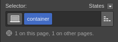
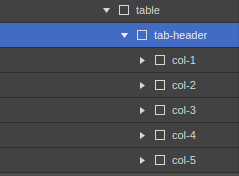
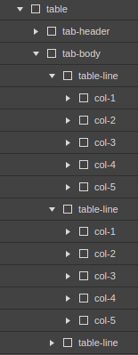
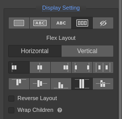
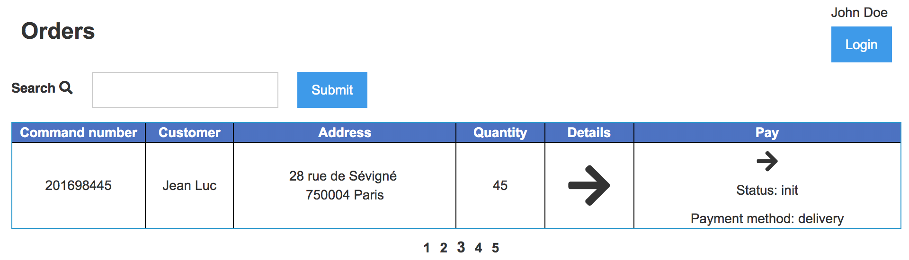
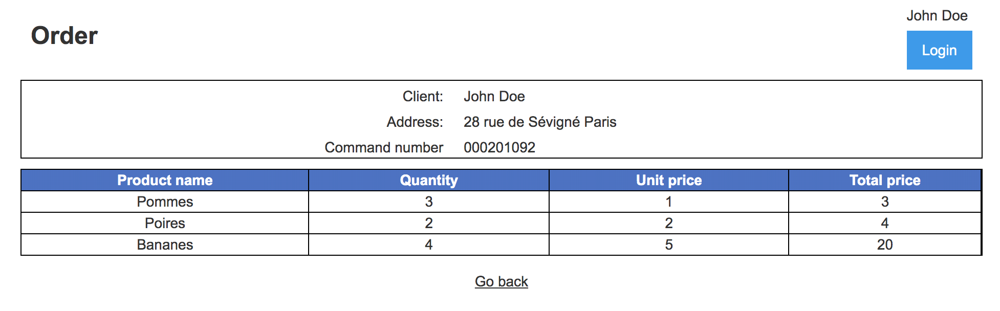
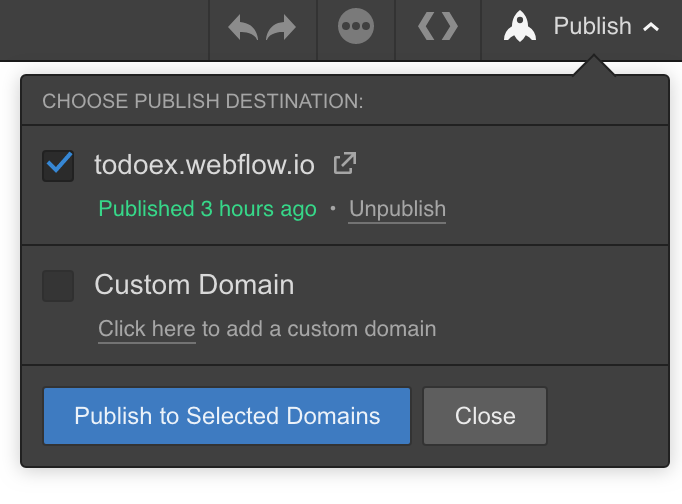
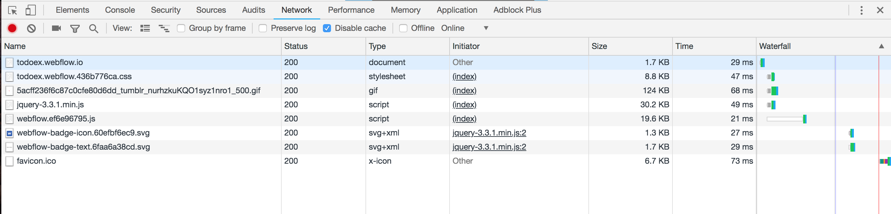
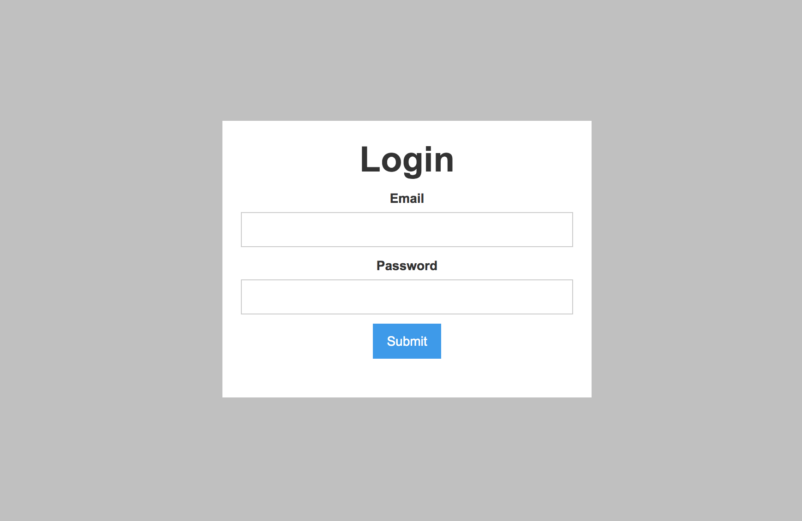
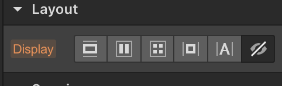

<style>
.markdown-body {
  box-sizing: border-box;
  min-width: 200px;
  max-width: 980px;
margin: 0 auto;
padding: 45px;
}

@media (max-width: 767px) {
  .markdown-body {
padding: 15px;
  }
}
</style>
<article class="markdown-body">
<!DOCTYPE html>
<html>
<head>
  <title>chap4/README.md</title>
  <link rel="stylesheet" href="../.github-markdown-css/github-markdown.css">
</head>
<body>
<div class="markdown-heading"><h1 class="heading-element">Chapter 4: Your great friend, Webflow</h1><a id="user-content-chapter-4-your-great-friend-webflow" class="anchor" aria-label="Permalink: Chapter 4: Your great friend, Webflow" href="#chapter-4-your-great-friend-webflow"><span aria-hidden="true" class="octicon octicon-link"></span></a></div>
<p><em>Estimated time to finish chapter: 1 day.</em></p>
<p>The goal of this chapter is to familiarize yourself with <a href="https://webflow.com/" rel="nofollow">Webflow</a>, a tool we use to create beautiful and responsive front-end.<br>
This tool helps us do the <strong>Design</strong> part of our project.  Linked with <strong>JSXZ</strong> and <strong>React</strong> you can rapidly create web applications.</p>
<div class="markdown-heading"><h2 class="heading-element">Step 0: Setting up Webflow</h2><a id="user-content-step-0-setting-up-webflow" class="anchor" aria-label="Permalink: Step 0: Setting up Webflow" href="#step-0-setting-up-webflow"><span aria-hidden="true" class="octicon octicon-link"></span></a></div>
<p>Before you go further, you need to create a free <a href="https://webflow.com/" rel="nofollow">Webflow</a> account.<br>
<a href="https://webflow.com/" rel="nofollow">Webflow</a> without a plan is restricted on some level. For example, you won't be able to create more than one page per project, or you won't be able to automatically export the resources of your project.</p>
<div class="markdown-heading"><h3 class="heading-element">Create your project</h3><a id="user-content-create-your-project" class="anchor" aria-label="Permalink: Create your project" href="#create-your-project"><span aria-hidden="true" class="octicon octicon-link"></span></a></div>
<p>Once logged in on your <strong>Webflow</strong> account, go to your dashboard and create a new project.<br>
Choose a  <code>Blank site</code> as starting point.</p>
<p>You will be redirected to the <code>home</code> page of your project, where you can start your design.</p>
<p>You can inspire yourself from other Webflow projects.</p>
<div class="markdown-heading"><h3 class="heading-element">The components</h3><a id="user-content-the-components" class="anchor" aria-label="Permalink: The components" href="#the-components"><span aria-hidden="true" class="octicon octicon-link"></span></a></div>
<p>You can find components in the left side of the page.<br>
Some of them are custom and specific to <strong>Webflow</strong>. This means that they use custom Webflow CSS classes, that we do not have control of.<br>
For this reason, we advise you to only use "raw" components.<br>
This includes: all the <code>Basic</code>, all the <code>Typography</code>, all the <code>Forms</code>, and all the <code>Media</code>.</p>
<p><strong>[NOTAE SIMONAE]</strong><br>
A thing to keep in mind when you build your website with webflow so the integration in JSXZ goes smoothly :</p>
<ul>
<li>Always use <strong>classes</strong> on your DOM components (never use <strong>ids</strong>). So don't hesitate to create as many specific classes you need: this will make the integration easier later.</li>
</ul>
<div class="markdown-heading"><h3 class="heading-element">Our container</h3><a id="user-content-our-container" class="anchor" aria-label="Permalink: Our container" href="#our-container"><span aria-hidden="true" class="octicon octicon-link"></span></a></div>
<p>All the items of our page will be contained inside <strong>one</strong> container, a <code>div</code>.<br>
Let's create it.</p>
<p><em>The default container of a page is the <strong><code>&lt;body&gt;</code></strong> tag. But, as we're going to use <strong>React</strong> this is going to make some trouble. Indeed, <strong>React</strong> uses the body tag to inject the generated page in it. Think about that when you will use your webflow generated page inside your web application.</em></p>
<p><a target="_blank" rel="noopener noreferrer" href="../img/container.png"></a></p>
<div class="markdown-heading"><h3 class="heading-element">Web page design</h3><a id="user-content-web-page-design" class="anchor" aria-label="Permalink: Web page design" href="#web-page-design"><span aria-hidden="true" class="octicon octicon-link"></span></a></div>
<p>All our web applications use <strong>React</strong>, as well as the homemade library named <strong>JSXZ</strong>.</p>
<p>As you already know, <strong>JSXZ</strong> is using what we call a <strong>CSS selector</strong>. This means that when rendering our web page, we will be able to target specific <strong>HTML elements</strong> using their <strong>CSS classes</strong> to alter them and inject custom values in them.</p>
<p>Knowing this will impact the way you are going to design your page.<br>
So if we think about the architecture of a table it will have to look like that when we will want to inject values:</p>
<div class="highlight highlight-source-js"><pre><span class="pl-c1">&lt;</span><span class="pl-ent">JSXZ</span> <span class="pl-c1">sel</span><span class="pl-c1">=</span><span class="pl-s">".table"</span><span class="pl-c1">&gt;</span>
  <span class="pl-c1">&lt;</span><span class="pl-ent">Z</span> <span class="pl-c1">sel</span><span class="pl-c1">=</span><span class="pl-s">".tab-header"</span><span class="pl-c1">&gt;</span><span class="pl-c1">&lt;</span><span class="pl-ent">ChildrenZ</span><span class="pl-c1">/</span><span class="pl-c1">&gt;</span><span class="pl-c1">&lt;</span><span class="pl-c1">/</span><span class="pl-ent">Z</span><span class="pl-c1">&gt;</span>
  <span class="pl-c1">&lt;</span><span class="pl-ent">Z</span> <span class="pl-c1">sel</span><span class="pl-c1">=</span><span class="pl-s">".tab-body"</span><span class="pl-c1">&gt;</span>
    <span class="pl-c1">&lt;</span><span class="pl-ent">JSXZ</span> <span class="pl-c1">sel</span><span class="pl-c1">=</span><span class="pl-s">".line"</span><span class="pl-c1">&gt;</span><span class="pl-kos">{</span><span class="pl-s">'Line 1'</span><span class="pl-kos">}</span><span class="pl-c1">&lt;</span><span class="pl-c1">/</span><span class="pl-ent">JSXZ</span><span class="pl-c1">&gt;</span>
    <span class="pl-c1">&lt;</span><span class="pl-ent">JSXZ</span> <span class="pl-c1">sel</span><span class="pl-c1">=</span><span class="pl-s">".line"</span><span class="pl-c1">&gt;</span><span class="pl-kos">{</span><span class="pl-s">'Line 2'</span><span class="pl-kos">}</span><span class="pl-c1">&lt;</span><span class="pl-c1">/</span><span class="pl-ent">JSXZ</span><span class="pl-c1">&gt;</span>
    <span class="pl-c1">&lt;</span><span class="pl-ent">JSXZ</span> <span class="pl-c1">sel</span><span class="pl-c1">=</span><span class="pl-s">".line"</span><span class="pl-c1">&gt;</span><span class="pl-kos">{</span><span class="pl-s">'Line 3'</span><span class="pl-kos">}</span><span class="pl-c1">&lt;</span><span class="pl-c1">/</span><span class="pl-ent">JSXZ</span><span class="pl-c1">&gt;</span>
    <span class="pl-c1">&lt;</span><span class="pl-ent">JSXZ</span> <span class="pl-c1">sel</span><span class="pl-c1">=</span><span class="pl-s">".line"</span><span class="pl-c1">&gt;</span><span class="pl-kos">{</span><span class="pl-s">'Line 4'</span><span class="pl-kos">}</span><span class="pl-c1">&lt;</span><span class="pl-c1">/</span><span class="pl-ent">JSXZ</span><span class="pl-c1">&gt;</span>
  <span class="pl-c1">&lt;</span><span class="pl-c1">/</span><span class="pl-ent">Z</span><span class="pl-c1">&gt;</span>
<span class="pl-c1">&lt;</span><span class="pl-c1">/</span><span class="pl-ent">JSXZ</span><span class="pl-c1">&gt;</span></pre></div>
<p>We can see that each lines has a specific <strong>CSS class</strong>, and it should also be the same for the columns if we want to inject values at specific positions inside a line.</p>
<p><a target="_blank" rel="noopener noreferrer" href="../img/table-header-archi.png"></a></p>
<p>If we use the same thinking for our table body, we end up with something like this:</p>
<p><a target="_blank" rel="noopener noreferrer" href="../img/table-architecture.png"></a></p>
<p><strong>All the CSS of our page is done via Webflow, DO NOT edit your CSS files with another editor. You will see later in your life at Kbrw how to manually add custom CSS.</strong></p>
<div class="markdown-heading"><h3 class="heading-element">Tips and tricks</h3><a id="user-content-tips-and-tricks" class="anchor" aria-label="Permalink: Tips and tricks" href="#tips-and-tricks"><span aria-hidden="true" class="octicon octicon-link"></span></a></div>
<ul>
<li>The layout <code>Flex box</code> is really useful and allow you to center your content. It should be your default layout. You can change the layout of a specific component using the right panel on you web page.</li>
</ul>
<p><a target="_blank" rel="noopener noreferrer" href="../img/flex-panel.png"></a></p>
<div class="markdown-heading"><h3 class="heading-element">Font awesome</h3><a id="user-content-font-awesome" class="anchor" aria-label="Permalink: Font awesome" href="#font-awesome"><span aria-hidden="true" class="octicon octicon-link"></span></a></div>
<p>We will use the <a href="https://fontawesome.com/" rel="nofollow"><strong>Font awesome</strong></a> fonts for all the texts.</p>
<p>Here are the steps to install them:</p>
<ul>
<li>Download the fonts <a href="https://fontawesome.com/how-to-use/on-the-web/setup/hosting-font-awesome-yourself" rel="nofollow">here</a>
</li>
<li>Go to your <a href="https://webflow.com/dashboard" rel="nofollow">Webflow Dashboard</a>
</li>
<li>Go to the settings of your project</li>
<li>In the tab <code>Fonts</code> click on <code>Upload</code> and select all the fonts inside the folder <code>webfonts</code>
</li>
<li>Validate every fonts</li>
</ul>
<p>To use it, you can for example select an icon from <a href="https://fontawesome.com/icons?d=gallery" rel="nofollow">this list</a>, copy the <code>glyph unicode</code> and paste it inside you Webflow.<br>
You should see a square. Change the fonts of this component to <code>Fa solid</code> and you should see your icon now :).</p>
<p><em>You should now be able to select the fonts like <strong>Fa <em>something</em></strong> in your project.</em></p>
<div class="markdown-heading"><h2 class="heading-element">Step 1: Design our pages</h2><a id="user-content-step-1-design-our-pages" class="anchor" aria-label="Permalink: Step 1: Design our pages" href="#step-1-design-our-pages"><span aria-hidden="true" class="octicon octicon-link"></span></a></div>
<p>You will create a basic two-pages front-end:</p>
<ul>
<li>
<p>The first page will:</p>
<ul>
<li>Display a search box with a search button</li>
<li>Display a pagination at the bottom
<ul>
<li>The user must be able to go to the <strong>First</strong>, <strong>-1</strong>, <strong>+1</strong>, <strong>Last</strong> pages.
<ul>
<li>
<em>Example</em>: <code>0 1 2 3</code> Will be displayed, if <strong>2</strong> is the current page, and there is just enougth data for up to 3 pages.</li>
</ul>
</li>
</ul>
</li>
<li>Display a table containing all the orders of the current page, with the columns: command number, customer name, address, and the total quantity of items</li>
<li>On each line of the array there should also be a button to pay the order, and another to go to the order's details</li>
</ul>
</li>
<li>
<p>The second page will:</p>
<ul>
<li>Display the detail of an order: command number, customer name, address</li>
<li>Display a table of the content of the order (one row per item in the order), with the columns : name, unit price, total price, quantity</li>
<li>Display the total price of the order</li>
<li>A return button to go back to the first page</li>
</ul>
</li>
</ul>
<p><strong>Take your time to do something good :)</strong><br>
<strong>Use at least ONE Font Awesome icon.</strong></p>
<p><em>Some examples:</em></p>
<hr>
<p><a target="_blank" rel="noopener noreferrer" href="../img/orders_page.png"></a></p>
<hr>
<p><a target="_blank" rel="noopener noreferrer" href="../img/order_page.png"></a></p>
<hr>
<div class="markdown-heading"><h2 class="heading-element">Step 2: Download the templates</h2><a id="user-content-step-2-download-the-templates" class="anchor" aria-label="Permalink: Step 2: Download the templates" href="#step-2-download-the-templates"><span aria-hidden="true" class="octicon octicon-link"></span></a></div>
<p>Now that we have two beautiful pages, we want to download them in a <code>web</code> subdirectory of our mix project.</p>
<p>To do so Webflow offers an export feature that allows you to download all your project resources in a zip file.<br>
Unfortunately, this feature is not available on a free plan. But we found a little alternative so that you can still do this training.</p>
<p>Once you're satisfied with your design, find the <code>Publish</code> button on the top-right corner of Webflow (you should see a little rocket icon there). Click on it, select the default webflow.io domain suggested and click on <code>Publish to Selected Domains</code>. Once it's done, just go on the domain you just published to.</p>
<p><a target="_blank" rel="noopener noreferrer" href="../img/webflow_publish.png"></a></p>
<p>On this page you can just manually download the resources of your projects and save them in the right place ;-)</p>
<p>Example:<br>
If the domain is <a href="http://tuto.webflow.io/" rel="nofollow">http://tuto.webflow.io/</a>, you can just run in your project repo the following <code>curl</code> command to download the resources.</p>
<p><code>curl http://tuto.webflow.io/ &gt; web/tuto.webflow/orders.html</code></p>
<p><code>curl https://uploads-ssl.webflow.com/5ac7a945e4871d724363ff2f/css/tuto.webflow.1509436a0.css &gt; web/tuto.webflow/csc/tuto.webflow.css</code>
<em>etc.</em></p>
<p>You'll have to do the same for every resources of your page.</p>
<p>To know what you need, just check out in your Chrome inspector what your pages download.</p>
<p><a target="_blank" rel="noopener noreferrer" href="../img/webflow_chrome_inspector.png"></a></p>
<p>Rest assured, we don't do that manually on our projects. We have a nice automated way to download webflow resources, that you'll find out when you'll start working on a project.</p>
<p>You should now have your two html pages as well as the corresponding resources inside your <code>web</code> subdirectory.</p>
<hr>
<div class="markdown-heading"><h2 class="heading-element">Step 3: Link Webflow, React and JSXZ</h2><a id="user-content-step-3-link-webflow-react-and-jsxz" class="anchor" aria-label="Permalink: Step 3: Link Webflow, React and JSXZ" href="#step-3-link-webflow-react-and-jsxz"><span aria-hidden="true" class="octicon octicon-link"></span></a></div>
<p>Let's pack it all together ! :)</p>
<div class="markdown-heading"><h3 class="heading-element">Webpack</h3><a id="user-content-webpack" class="anchor" aria-label="Permalink: Webpack" href="#webpack"><span aria-hidden="true" class="octicon octicon-link"></span></a></div>
<p>We're going to modify our Webpack configuration a little:</p>
<ul>
<li>Change the output directory</li>
<li>Bundle all our <strong>CSS</strong> inside one file</li>
</ul>
<p>For that we first need to add and import some modules:</p>
<div class="highlight highlight-source-shell"><pre>  $<span class="pl-k">&gt;</span> npm install mini-css-extract-plugin@^1.1.1
  $<span class="pl-k">&gt;</span> npm install css-minimizer-webpack-plugin@^1.1.5
  $<span class="pl-k">&gt;</span> npm install css-loader@^5.0.0</pre></div>
<div class="highlight highlight-source-js"><pre>  <span class="pl-k">var</span> <span class="pl-s1">path</span> <span class="pl-c1">=</span> <span class="pl-en">require</span><span class="pl-kos">(</span><span class="pl-s">'path'</span><span class="pl-kos">)</span><span class="pl-kos">,</span>
      <span class="pl-v">MiniCssExtractPlugin</span> <span class="pl-c1">=</span> <span class="pl-en">require</span><span class="pl-kos">(</span><span class="pl-s">'mini-css-extract-plugin'</span><span class="pl-kos">)</span><span class="pl-kos">,</span>
      <span class="pl-v">CssMinimizerPlugin</span> <span class="pl-c1">=</span> <span class="pl-en">require</span><span class="pl-kos">(</span><span class="pl-s">'css-minimizer-webpack-plugin'</span><span class="pl-kos">)</span></pre></div>
<p>Here is the new configuration.</p>
<div class="highlight highlight-source-js"><pre>    <span class="pl-c">//...</span>
    <span class="pl-c">//This will output our files inside the ../priv/static directory</span>
    output: <span class="pl-kos">{</span>
      <span class="pl-c1">path</span>: <span class="pl-s1">path</span><span class="pl-kos">.</span><span class="pl-en">join</span><span class="pl-kos">(</span><span class="pl-s1">__dirname</span><span class="pl-kos">,</span> <span class="pl-s">'../priv/static'</span><span class="pl-kos">)</span><span class="pl-kos">,</span>
      <span class="pl-c1">filename</span>: <span class="pl-s">'[name].js'</span><span class="pl-kos">,</span>
    <span class="pl-kos">}</span><span class="pl-kos">,</span>
    <span class="pl-c">//...</span>
    <span class="pl-c">//This will bundle all our .css file inside styles.css</span>
    <span class="pl-s1">optimization</span>: <span class="pl-kos">{</span>
      <span class="pl-c1">splitChunks</span>: <span class="pl-kos">{</span><span class="pl-c1">cacheGroups</span>: <span class="pl-kos">{</span><span class="pl-c1">styles</span>: <span class="pl-kos">{</span><span class="pl-c1">name</span>: <span class="pl-s">'styles'</span><span class="pl-kos">,</span> <span class="pl-c1">test</span>: <span class="pl-pds"><span class="pl-c1">/</span>\.css$<span class="pl-c1">/</span></span> <span class="pl-kos">,</span> <span class="pl-c1">chunks</span>: <span class="pl-s">'all'</span><span class="pl-kos">,</span> <span class="pl-c1">enforce</span>: <span class="pl-c1">true</span><span class="pl-kos">}</span><span class="pl-kos">}</span><span class="pl-kos">}</span><span class="pl-kos">,</span>
      <span class="pl-c1">minimizer</span>: <span class="pl-kos">[</span><span class="pl-s">`...`</span><span class="pl-kos">,</span> <span class="pl-k">new</span> <span class="pl-v">CssMinimizerPlugin</span><span class="pl-kos">(</span><span class="pl-kos">)</span><span class="pl-kos">]</span>
    <span class="pl-kos">}</span><span class="pl-kos">,</span>
    <span class="pl-s1">plugins</span>: <span class="pl-kos">[</span><span class="pl-k">new</span> <span class="pl-v">MiniCssExtractPlugin</span><span class="pl-kos">(</span><span class="pl-kos">{</span><span class="pl-c1">insert</span>: <span class="pl-s">""</span><span class="pl-kos">,</span> <span class="pl-c1">filename</span>: <span class="pl-s">"[name].css"</span><span class="pl-kos">}</span><span class="pl-kos">)</span><span class="pl-kos">]</span><span class="pl-kos">,</span>

    <span class="pl-c">//...</span>
    <span class="pl-c">//Add to our loader rules</span>
    <span class="pl-c">//This will process the .css files included in our application (app.js)</span>
            <span class="pl-kos">{</span>
              <span class="pl-c1">test</span>: <span class="pl-pds"><span class="pl-c1">/</span>\.(css)$<span class="pl-c1">/</span></span><span class="pl-kos">,</span>
              <span class="pl-c1">use</span>: <span class="pl-kos">[</span><span class="pl-kos">{</span><span class="pl-c1">loader</span>: <span class="pl-v">MiniCssExtractPlugin</span><span class="pl-kos">.</span><span class="pl-c1">loader</span><span class="pl-kos">}</span><span class="pl-kos">,</span> <span class="pl-kos">{</span> <span class="pl-c1">loader</span>: <span class="pl-s">"css-loader"</span> <span class="pl-kos">}</span><span class="pl-kos">]</span>
            <span class="pl-kos">}</span></pre></div>
<p>To make Webpack aware of our files, we will need to <code>require</code> them inside our application.</p>
<div class="highlight highlight-source-js"><pre><span class="pl-en">require</span><span class="pl-kos">(</span><span class="pl-s">'!!file-loader?name=[name].[ext]!./index.html'</span><span class="pl-kos">)</span>
<span class="pl-en">require</span><span class="pl-kos">(</span><span class="pl-s">'./tuto.webflow/css/tuto.webflow.css'</span><span class="pl-kos">)</span><span class="pl-kos">;</span></pre></div>
<p><em>I will let you have a look at the "<strong>file-loader</strong>" and "<strong>css-loader</strong>" dependencies and install them, you should use version <strong>6.1.1</strong> and <strong>5.0.0</strong> respectively</em></p>
<div class="markdown-heading"><h3 class="heading-element">The React web application</h3><a id="user-content-the-react-web-application" class="anchor" aria-label="Permalink: The React web application" href="#the-react-web-application"><span aria-hidden="true" class="octicon octicon-link"></span></a></div>
<p>Rename your <code>script.js</code> into <code>app.js</code>, and remove everything inside it.<br>
Let's create the base of our React App:</p>
<div class="highlight highlight-source-js"><pre><span class="pl-en">require</span><span class="pl-kos">(</span><span class="pl-s">'!!file-loader?name=[name].[ext]!./index.html'</span><span class="pl-kos">)</span>
<span class="pl-c">/* required library for our React app */</span>
<span class="pl-k">var</span> <span class="pl-v">ReactDOM</span> <span class="pl-c1">=</span> <span class="pl-en">require</span><span class="pl-kos">(</span><span class="pl-s">'react-dom'</span><span class="pl-kos">)</span>
<span class="pl-k">var</span> <span class="pl-v">React</span> <span class="pl-c1">=</span> <span class="pl-en">require</span><span class="pl-kos">(</span><span class="pl-s">"react"</span><span class="pl-kos">)</span>
<span class="pl-k">var</span> <span class="pl-s1">createReactClass</span> <span class="pl-c1">=</span> <span class="pl-en">require</span><span class="pl-kos">(</span><span class="pl-s">'create-react-class'</span><span class="pl-kos">)</span>

<span class="pl-c">/* required css for our application */</span>
<span class="pl-en">require</span><span class="pl-kos">(</span><span class="pl-s">'./tuto.webflow/css/webflow.css'</span><span class="pl-kos">)</span><span class="pl-kos">;</span>
<span class="pl-en">require</span><span class="pl-kos">(</span><span class="pl-s">'./tuto.webflow/css/tuto.webflow.css'</span><span class="pl-kos">)</span><span class="pl-kos">;</span></pre></div>
<p><em>You need to require your own resources, according to your webflow project and the css files you downloaded.</em></p>
<p>Here we require all the needed library for our <strong>React</strong> application.<br>
Now we will write our custom React component using our <strong>HTML</strong> code:</p>
<div class="highlight highlight-source-js"><pre><span class="pl-k">var</span> <span class="pl-v">Page</span> <span class="pl-c1">=</span> <span class="pl-en">createReactClass</span><span class="pl-kos">(</span> <span class="pl-kos">{</span>
<span class="pl-en">render</span><span class="pl-kos">(</span><span class="pl-kos">)</span><span class="pl-kos">{</span>
  <span class="pl-k">return</span> <span class="pl-c1">&lt;</span><span class="pl-ent">JSXZ</span> <span class="pl-c1">in</span><span class="pl-c1">=</span><span class="pl-s">"orders"</span> <span class="pl-c1">sel</span><span class="pl-c1">=</span><span class="pl-s">".container"</span><span class="pl-c1">&gt;</span>
  <span class="pl-c1">&lt;</span><span class="pl-c1">/</span><span class="pl-ent">JSXZ</span><span class="pl-c1">&gt;</span>
<span class="pl-kos">}</span>
<span class="pl-kos">}</span><span class="pl-kos">)</span>

<span class="pl-v">ReactDOM</span><span class="pl-kos">.</span><span class="pl-en">render</span><span class="pl-kos">(</span><span class="pl-c1">&lt;</span><span class="pl-v">Page</span> <span class="pl-c1">/</span><span class="pl-c1">&gt;</span><span class="pl-kos">,</span> <span class="pl-smi">document</span><span class="pl-kos">.</span><span class="pl-en">getElementById</span><span class="pl-kos">(</span><span class="pl-s">'root'</span><span class="pl-kos">)</span><span class="pl-kos">)</span><span class="pl-kos">;</span></pre></div>
<p>Here, the <strong><code>&lt;JSXZ&gt;</code></strong> tag tells the transpiler to <strong>inject all the content</strong> of the element with the class <code>.container</code> of our <strong>HTML</strong> file <code>orders.html</code> in the <strong>React</strong> class <code>Page</code>. This will print statically the content of our element on our page.</p>
<p>Now execute <strong>Webpack</strong> script to transpile our page to <code>priv/static</code></p>
<div class="highlight highlight-source-shell"><pre>  $<span class="pl-k">&gt;</span> node node_modules/webpack/bin/webpack.js</pre></div>
<p><em>Hint: you can use the <code>-w</code> option to tell webpack to watch over you files and transpile them when a modification occured.</em></p>
<p>To verify our page is correctly generated, launch <code>./priv/static/index.html</code> in your browser. Verify the whole page is correctly printed in your browser.</p>
<p>Let's now modify our script to load the data in our table.<br>
For that we will use the <strong><code>&lt;Z&gt;</code></strong> tag.</p>
<div class="markdown-heading"><h3 class="heading-element">Integrate Webflow HTML with JSXZ</h3><a id="user-content-integrate-webflow-html-with-jsxz" class="anchor" aria-label="Permalink: Integrate Webflow HTML with JSXZ" href="#integrate-webflow-html-with-jsxz"><span aria-hidden="true" class="octicon octicon-link"></span></a></div>
<p>You can have a look into the JSXZ repository <a href="https://github.com/kbrw/babel-preset-jsxz">here</a>.</p>
<p>Once we installed everything to transpile <strong>JSXZ</strong>, we can write our first
<strong>React</strong> with a <strong>JSXZ</strong> page based on a <strong>Webflow</strong> template.<br>
As in the previous chapter, all our templates are inside a directory.<br>
We indicated this directory to <strong>JSXZ</strong> inside the Webpack configuration:</p>
<div class="highlight highlight-source-js"><pre>presets: <span class="pl-kos">[</span><span class="pl-kos">[</span><span class="pl-s">"@kbrw/jsxz"</span><span class="pl-kos">,</span> <span class="pl-kos">{</span> <span class="pl-c1">dir</span>: <span class="pl-s">'webflow'</span> <span class="pl-kos">}</span><span class="pl-kos">]</span><span class="pl-kos">]</span></pre></div>
<p>Let's write an example <strong>React</strong> that reads JSON variable set locally in our
JS script.</p>
<p>Define an array that will be mapped inside our <code>Page.render</code> function created before.</p>
<div class="highlight highlight-source-js"><pre><span class="pl-k">var</span> <span class="pl-s1">orders</span> <span class="pl-c1">=</span> <span class="pl-kos">[</span>
  <span class="pl-kos">{</span><span class="pl-c1">remoteid</span>: <span class="pl-s">"000000189"</span><span class="pl-kos">,</span> <span class="pl-c1">custom</span>: <span class="pl-kos">{</span><span class="pl-c1">customer</span>: <span class="pl-kos">{</span><span class="pl-c1">full_name</span>: <span class="pl-s">"TOTO &amp; CIE"</span><span class="pl-kos">}</span><span class="pl-kos">,</span> <span class="pl-c1">billing_address</span>: <span class="pl-s">"Some where in the world"</span><span class="pl-kos">}</span><span class="pl-kos">,</span> <span class="pl-c1">items</span>: <span class="pl-c1">2</span><span class="pl-kos">}</span><span class="pl-kos">,</span> 
  <span class="pl-kos">{</span><span class="pl-c1">remoteid</span>: <span class="pl-s">"000000190"</span><span class="pl-kos">,</span> <span class="pl-c1">custom</span>: <span class="pl-kos">{</span><span class="pl-c1">customer</span>: <span class="pl-kos">{</span><span class="pl-c1">full_name</span>: <span class="pl-s">"Looney Toons"</span><span class="pl-kos">}</span><span class="pl-kos">,</span> <span class="pl-c1">billing_address</span>: <span class="pl-s">"The Warner Bros Company"</span><span class="pl-kos">}</span><span class="pl-kos">,</span> <span class="pl-c1">items</span>: <span class="pl-c1">3</span><span class="pl-kos">}</span><span class="pl-kos">,</span> 
  <span class="pl-kos">{</span><span class="pl-c1">remoteid</span>: <span class="pl-s">"000000191"</span><span class="pl-kos">,</span> <span class="pl-c1">custom</span>: <span class="pl-kos">{</span><span class="pl-c1">customer</span>: <span class="pl-kos">{</span><span class="pl-c1">full_name</span>: <span class="pl-s">"Asterix &amp; Obelix"</span><span class="pl-kos">}</span><span class="pl-kos">,</span> <span class="pl-c1">billing_address</span>: <span class="pl-s">"Armorique"</span><span class="pl-kos">}</span><span class="pl-kos">,</span> <span class="pl-c1">items</span>: <span class="pl-c1">29</span><span class="pl-kos">}</span><span class="pl-kos">,</span> 
  <span class="pl-kos">{</span><span class="pl-c1">remoteid</span>: <span class="pl-s">"000000192"</span><span class="pl-kos">,</span> <span class="pl-c1">custom</span>: <span class="pl-kos">{</span><span class="pl-c1">customer</span>: <span class="pl-kos">{</span><span class="pl-c1">full_name</span>: <span class="pl-s">"Lucky Luke"</span><span class="pl-kos">}</span><span class="pl-kos">,</span> <span class="pl-c1">billing_address</span>: <span class="pl-s">"A Cowboy doesn't have an address. Sorry"</span><span class="pl-kos">}</span><span class="pl-kos">,</span> <span class="pl-c1">items</span>: <span class="pl-c1">0</span><span class="pl-kos">}</span><span class="pl-kos">,</span> 
<span class="pl-kos">]</span>

<span class="pl-c">//To render this JSON in the table, we will have to map the list on a **`JSXZ`** render. </span>

<span class="pl-kos">{</span>
  <span class="pl-s1">orders</span><span class="pl-kos">.</span><span class="pl-en">map</span><span class="pl-kos">(</span> <span class="pl-s1">order</span> <span class="pl-c1">=&gt;</span> <span class="pl-kos">(</span><span class="pl-c1">&lt;</span><span class="pl-ent">JSXZ</span> <span class="pl-c1">in</span><span class="pl-c1">=</span><span class="pl-s">"orders"</span> <span class="pl-c1">sel</span><span class="pl-c1">=</span><span class="pl-s">".table-line"</span><span class="pl-c1">&gt;</span>
  <span class="pl-c1">&lt;</span><span class="pl-ent">Z</span> <span class="pl-c1">sel</span><span class="pl-c1">=</span><span class="pl-s">"..."</span><span class="pl-c1">&gt;</span><span class="pl-kos">{</span><span class="pl-s1">order</span><span class="pl-kos">.</span><span class="pl-c1">remoteid</span><span class="pl-kos">}</span><span class="pl-c1">&lt;</span><span class="pl-c1">/</span><span class="pl-ent">Z</span><span class="pl-c1">&gt;</span>
  ...
  <span class="pl-c1">&lt;</span><span class="pl-c1">/</span><span class="pl-ent">JSXZ</span><span class="pl-c1">&gt;</span><span class="pl-kos">)</span><span class="pl-kos">)</span>
 <span class="pl-kos">}</span></pre></div>
<p><em>Don't forget that inside a <code>&lt;JSXZ&gt;</code> there must only be <code>&lt;Z&gt;</code> !</em></p>
<div class="markdown-heading"><h2 class="heading-element">Step 4 - Modal and loaders</h2><a id="user-content-step-4---modal-and-loaders" class="anchor" aria-label="Permalink: Step 4 - Modal and loaders" href="#step-4---modal-and-loaders"><span aria-hidden="true" class="octicon octicon-link"></span></a></div>
<p>Sometimes in your project you will do a heavy operation that takes a long time, or maybe you will want to ask or show some specific information to your user.<br>
For that, we will use Loaders and Modals :)</p>
<div class="markdown-heading"><h3 class="heading-element">Modal</h3><a id="user-content-modal" class="anchor" aria-label="Permalink: Modal" href="#modal"><span aria-hidden="true" class="octicon octicon-link"></span></a></div>
<p>A modal is a window inside your browser window.</p>
<p>We're going to design one with Webflow.</p>
<ul>
<li>Create a new page. Always create your modals inside their own separate page ; you will then include them into your project using <strong>JSXZ</strong>
</li>
<li>Create a new div, it will be the container of our modal. We will name it <code>modal-wrapper</code>.
<ul>
<li>Assign it a <code>100%</code> Width and <code>100VH</code> Height.</li>
<li>Change its background color so that it's a little bit transparent and grey-ish.</li>
<li>Set its position to absolute, top left.</li>
<li>Set the z-index to 1000</li>
</ul>
</li>
<li>Add a new div inside your <code>modal-wrapper</code>, we will call it <code>modal-content</code>
<ul>
<li>It will be our modal "window"</li>
<li>Put it at the center of your page, change the width and height</li>
<li>Make its position <code>fixed</code>, so that it will stay in the center even if your user is scrolling</li>
<li>Change the color of the background. Make it white for example.</li>
<li>Now inside it you can add some components like text, forms, media, etc.</li>
</ul>
</li>
</ul>
<p>You should obtain something like this:<br>
<a target="_blank" rel="noopener noreferrer" href="../img/modal_example.png"></a></p>
<p>And here we have our first modal ! Great isn't it ? :)</p>
<p>But we're still missing something, we need to find a way to hide it.</p>
<p>In Webflow, create a new CSS class called <code>hidden</code>.<br>
This class is pretty simple, just click on the <strong>"hides elements"</strong> in the display section.<br>
Test it by adding it to your <code>modal-wrapper</code> div. It should hide your modal <strong>and</strong> the grey background.</p>
<p><em><strong>Tip:</strong> Your <code>hidden</code> class must be the only one on your component when you edit it. The simplest way is to create an <strong>empty div</strong>, create your CSS class, and then delete this div.</em></p>
<p><a target="_blank" rel="noopener noreferrer" href="../img/hidden_class.png"></a></p>
<div class="markdown-heading"><h3 class="heading-element">Loader</h3><a id="user-content-loader" class="anchor" aria-label="Permalink: Loader" href="#loader"><span aria-hidden="true" class="octicon octicon-link"></span></a></div>
<p>A loader is essentially the same thing as a modal, the difference is that it contains a GIF or an animated image.</p>
<p>Follow the same principles of creation that we have with a modal:</p>
<ul>
<li>Create a new page</li>
<li>Create our container div, this time name it <code>loader-wrapper</code>
<ul>
<li>Apply the same properties as we did before for the <code>modal-wrapper</code>
</li>
</ul>
</li>
<li>Create a new div called <code>loader-content</code>
<ul>
<li>Add an image inside it</li>
<li>You can use the website <a href="https://loading.io" rel="nofollow">https://loading.io</a> to create your own custom loader</li>
</ul>
</li>
</ul>
<p>And that's it ! If you want to hide it, add the <code>hidden</code> CSS class to your <code>wrapper</code> div et voilà ! :)</p>
<p>You will use your Modal and your Loader later in this tutorial.</p>
<hr>
<div class="markdown-heading"><h2 class="heading-element">Question time !</h2><a id="user-content-question-time-" class="anchor" aria-label="Permalink: Question time !" href="#question-time-"><span aria-hidden="true" class="octicon octicon-link"></span></a></div>
<ul>
<li>What use can we have for a Loader or a Modal ?</li>
<li>Why do we use <strong>CSS</strong> classes ?</li>
<li>What is Webflow ?</li>
</ul>
<hr>
<p><a href="chap3.html">Prev Chapter</a> <strong>Chapter 4</strong> <a href="chap5.html">Next Chapter</a></p>

</body>
</html>
</article>
